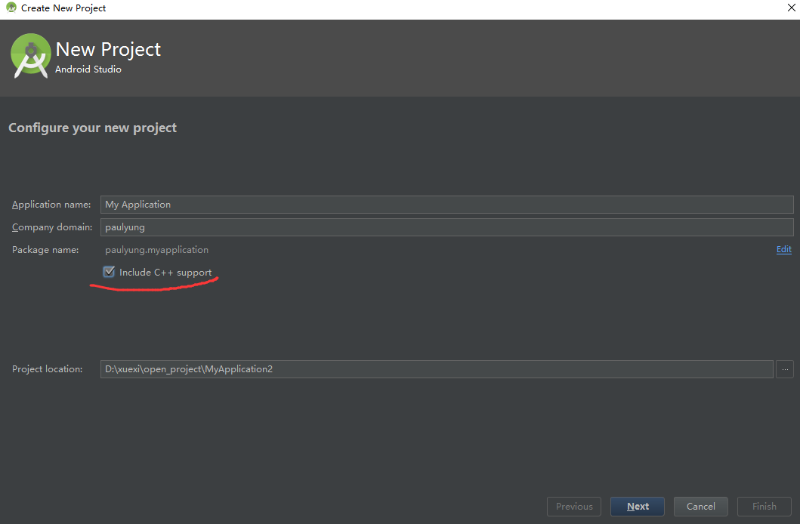
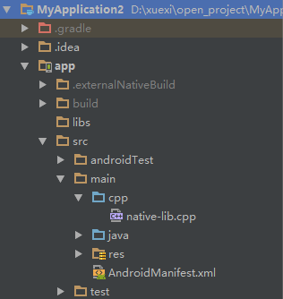
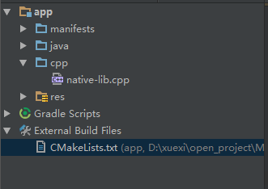
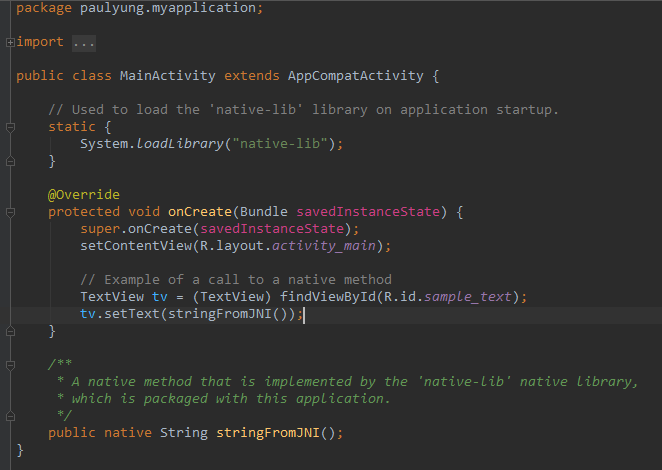
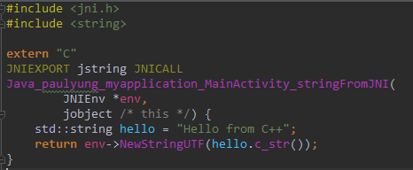
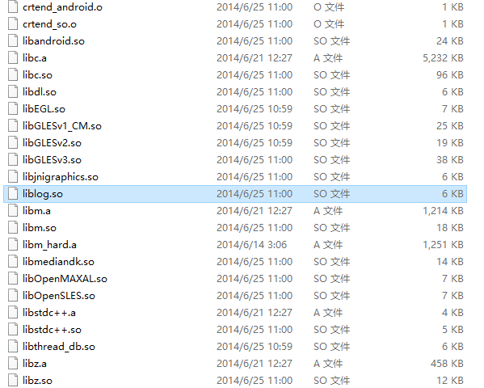
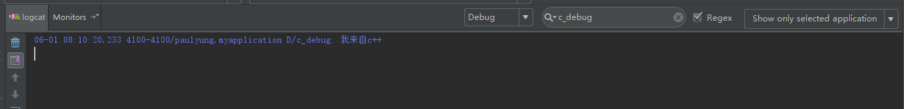
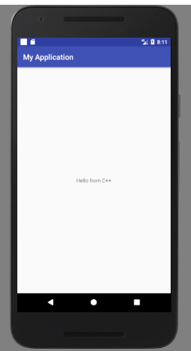
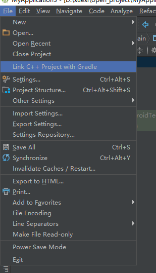

引子#
Android NDK有两种方式构建，一种是使用 ndk-build 脚本方式进行构建，另一种就是本文要使用的方式，cmake
关于cmake的使用，会另外再写一篇博客进行介绍，本文重点是使用cmake在Android Studio中进行代码构建。
其中在项目开发中，有可能是中途才引进NDK开发的，这里进行记录，针对一开始使用ndk，和项目中途引进ndk两种方式进行说明。
创建项目时，便引入NDK#
这种方式是从头开始一个NDK项目，也是大部分博客写入门NDK的一个内容，虽然这个不是本文重点，但是也把过程梳理一遍。
新建项目，并选中对c++的支持

新建完成之后，AS 自动帮我们生成了一套例子，是使用Cmake的方式，下面是目录结构

可以看到，AS 帮我们生成了cpp目录，和一个 CMakeLists.txt，这个是cmake的构建脚本

现在来看看 MainActivity ，拥有了一个 native 方法，目的是调用 c++ 代码，并传回来一个 String

再来看看 c++ 代码，直接返回了一个字符串

现在重点来啦，CMakeLists.txt 是 CMake 用来跨平台构建 c/c++ 代码的脚本，也就是相当于 Java 里的 ant 或者 Android 里的 Gradle 差不多
去掉了一些不必要的注释，刚刚创建的项目的 CMakeLists.txt 文件如下所示
1 | cmake_minimum_required(VERSION 3.4.1) |
add_library 表示将你的代码作为库进行链接，SHARED表示将此库作为动态链接库，也就是经常看到的so库
上面的find_library展示了去寻找 DNK 里面的 liblog.so 库，并把名字命名为 log-lib，有人会问了，这个liblog.so 文件在哪呀？它就在下面这个目录下
你的NDK目录\platforms\android-L\arch-arm\usr\lib
看，这不就是么

最后，将所有的库进行一个归总，统一加入到 native-lib 中，这样在 Java 加入动态库的时候，只需要加入 native-lib 就可以了
现在来run一把，顺便试试刚刚加入的 liblog.so 能不能正常的打印到 logcat 里面
当然得修改 native-lib.cpp 让它打印点东西，修改后代码如下
1 |
|
运行结果如下图所示，完美运行


在项目创建后，再引入NDK#
我们有时候是这样的，刚开始没有使用NDK，但在项目深入到某个阶段时候，不得不使用c/c++代码才能解决问题，这个时候需要使用到NDK了。下面就来说说，怎样在一个已有的项目里面引进NDK
首先同样我们新建一个项目，但是不要勾选c++代码支持
创建好后，我们手动创建跟刚刚一样的目录结构，并把刚才的 native-lib.cpp 和 CMakeLists.txt 拷贝过来，然后点击工具栏 File -> Link C++ Project with Gradle ，如下图所示

在弹出的对话框中选择 CMake 方式，并选择刚刚拷贝过来的 CMakeLists.txt 文件，然后点 OK，等一会后，项目就构建好了
然后在 MainActivity 里面调用 stringFromJNI() 方法，运行项目，没有什么问题。
Gradle配置#
首先是 so 文件的存放位置问题，默认 Gradle 会去 项目主Module/src/main/jniLibs 这个目录去找，但这是可以修改的
1 | android { |
如果要添加编译参数和限制so的架构，可以使用如下设置
1 | android { |
这里使用的是 cFlags 指的是c语言的编译参数 ‘-g -std=c99’ 表示支持调试和使用c99标准。如果要添加不同的架构，可以使用 ‘abiFilters’ 去添加。
总结#
以上就是两种方式引入NDK开发，为大家利用 AS入门NDK提供了一些思路。但是在实际项目里面，可能会有多个 c/c++ 文件，并且还有 .h 头文件等等，这样的话，应该怎样去写 CMakeLists.txt 呢，又有哪些坑呢，请看后续更新。